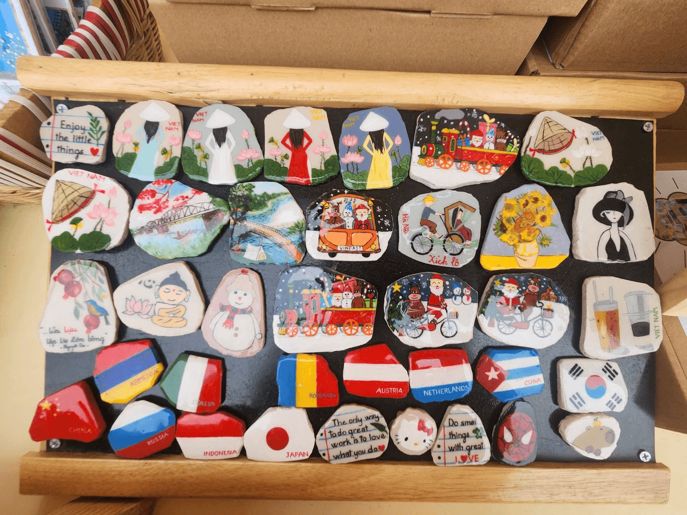
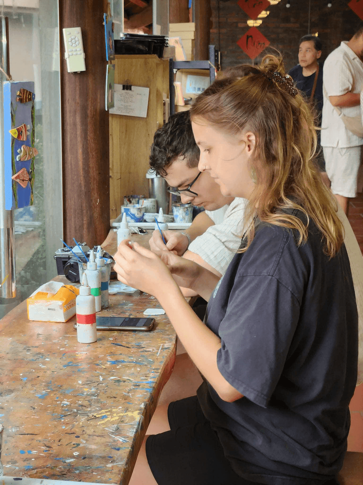
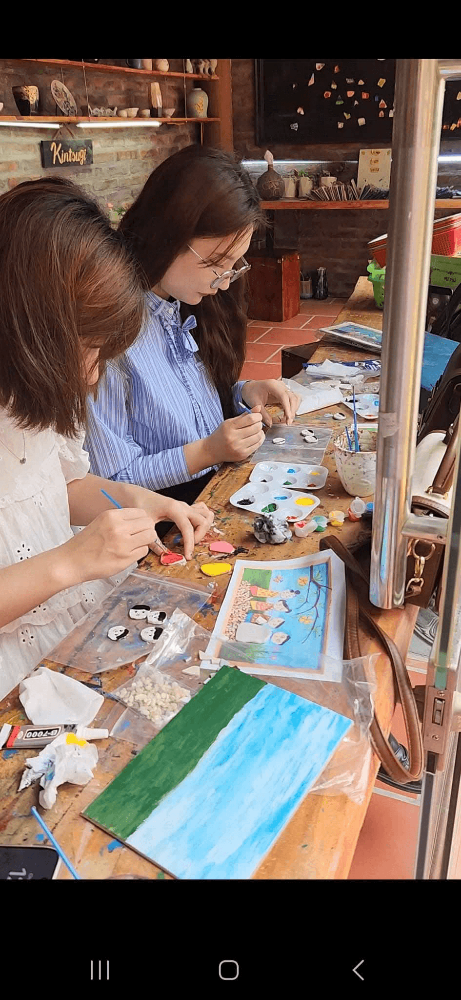
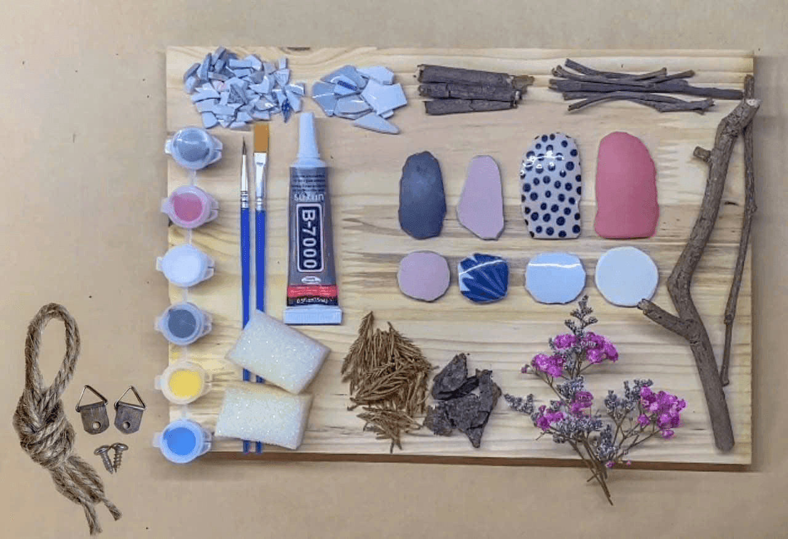
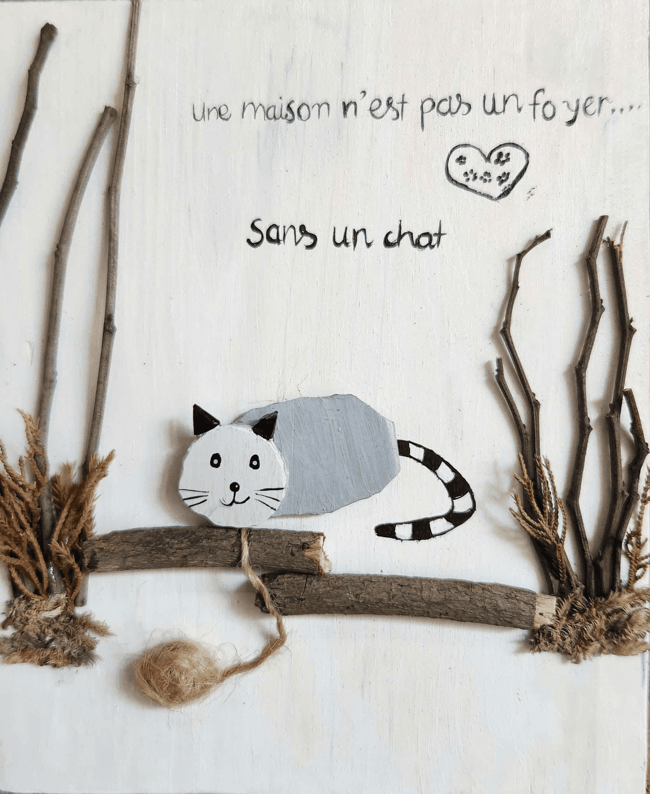
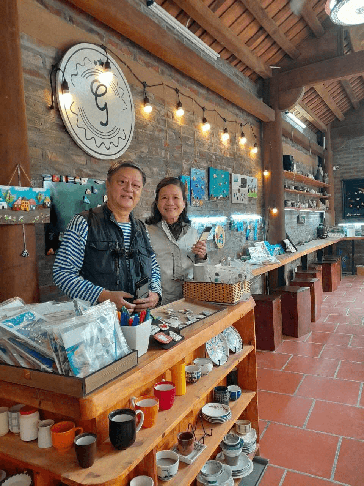
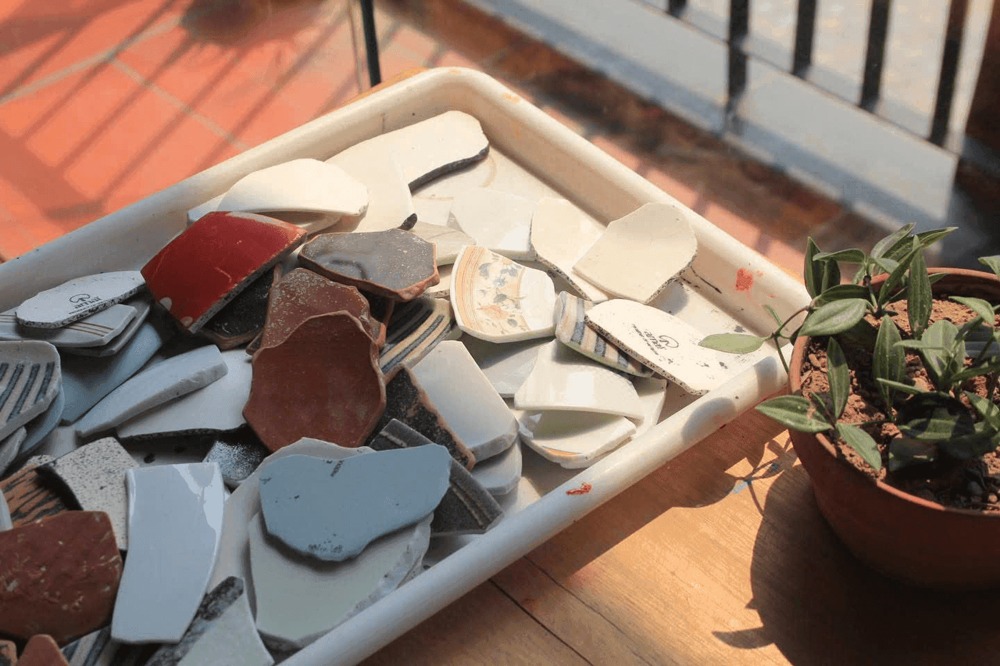
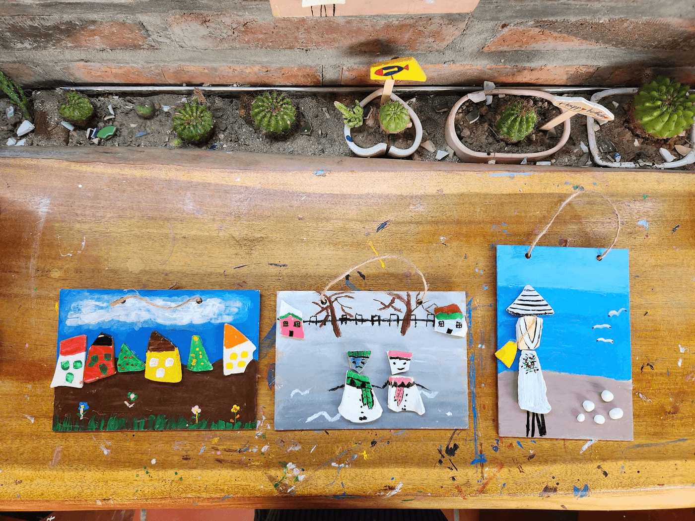
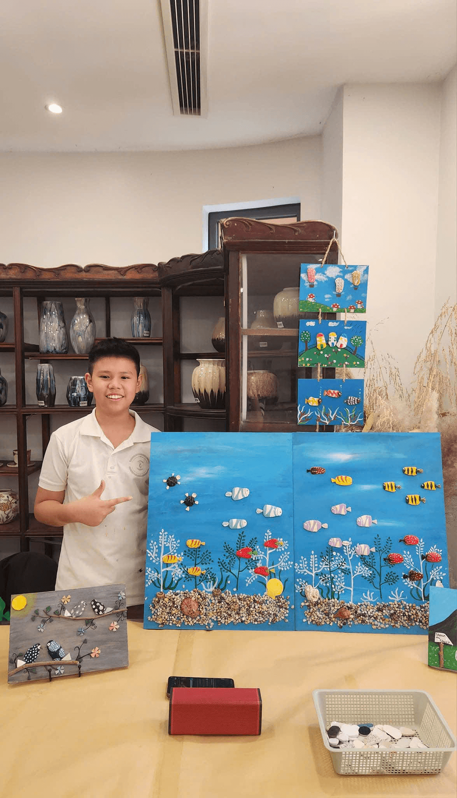

Gốm Sứ Xanh: Những câu hỏi thường gặp
Q1: Workshop Gốm sứ xanh là gì?
Workshop Gốm sứ xanh của chúng mình là workshop gốm tái chế, nơi bạn sẽ được trải nghiệm các hoạt động có tính mỹ thuật với các sản phẩm gốm tái chế của chúng mình. Đây là 1 hoạt động vô cùng ý nghĩa và góp phần bảo vệ mội trường cũng như giúp bạn giải trí cuối tuần.

Q2: Với một người chưa biết nhiều về mỹ thuật thì có tham gia được không?
Không sao hết bởi vì trong workshop của chúng mình có các “nghệ nhân” luôn ở đó và giúp đỡ bạn mỗi khi bạn cần. Chỉ cần bạn cởi mở hỏi xin góp ý, những nghệ nhân đó sẽ sẵn sàng góp ý cho bạn để sản phẩm của bạn được đẹp nhất có thể nhé!

Q3: Các hoạt động trong workshop gốm tái chế?
Khi đến với workshop gốm tái chế của chúng mình bạn sẽ được trải nghiệm:
- Tranh Gốm sứ tái chế: Dựa vào những nguyên vật liệu được cung cấp, bạn có thể sáng tạo ra những bức tranh độc đáo.
- Làm nam châm gắn tủ lạnh: Bạn có thể vẽ hoặc tô màu trên các hình có sẵn, biến chúng thành nam châm trang trí.
- Làm móc chìa khóa: Từ các mảnh gốm vỡ, bạn sẽ vẽ lên các mảnh phôi và cuối cùng là phủ bóng, treo dây.

Q4: Khi tham gia workshop mình có phải mang dụng cụ thêm không?
Không nha! Khi đến với workshop của chúng mình, bạn không cần phải mang thêm gì cả, tất cả dụng cụ đã được chúng mình chuẩn bị đầy đủ. Bạn chỉ cần chuẩn bị 1 tinh thần thoải mái cùng với một nguồn năng lượng tích cực đến với Gốm sứ xanh thôi!

Q5: Quy mô workshop của Gốm Sứ Xanh?
1 buổi workshop của bọn mình sẽ có từ 25-30 người, tùy vào địa điểm to hơn có thể tổ chức với quy mô lớn hơn.

Q6: Workshop diễn ra trong bao lâu và giá của workshop là bao nhiêu?
Workshop Gốm sứ xanh diễn ra từ 8h-12h hoặc 13h-17h và giá vé là 420.000đ. Giá vé đã bao gồm:
- Tất cả các dụng cụ trong workshop
- Các “nghệ nhân” và trợ giảng hỗ trợ, hướng dẫn
- 01 đồ uống miễn phí ở địa điểm tổ chức

Q7: Mình bận vào ngày hôm tổ chức workshop thì có được đổi sang ngày hôm khác không?
Nếu bạn bận hoặc không thể tham gia workshop, bạn có thể đổi lịch sang hôm khác bằng cách:
- B1: Vào mục “Tài khoản” > “Lịch sử đăng ký”
- B2: Bấm vào nút “Thay đổi” tại hàng hiển thị workshop
- B3: Thay đổi lịch (Lưu ý: Chỉ được đổi trong vòng 7 ngày trước ngày workshop diễn ra)

Q8: Tôi có được đi thêm cùng bạn bè, người thân không?
Bạn có thể tìm người đồng hành để có được trải nghiệm tốt nhất nha, và cũng đừng quên mua vé cho họ nữa. Workshop có giới hạn số lượng người trong đợt đăng kí đó nên bạn hãy theo dõi để đăng kí được sớm nhé.

Q9: Làm thế nào để đăng kí tham gia workshop?
Bạn chỉ cần làm theo các bước sau:
- B1: Vào trang workshop, bấm vào nút “Đăng kí” và hoàn tất thanh toán.
- B2: Có mặt tại địa điểm tổ chức trước 15 phút.
- B3: Tận hưởng không gian và trải nghiệm tại workshop Gốm sứ xanh!
Fact: Cuối buổi hãy cùng nán lại một xíu để chụp ảnh kỉ niệm nha!
